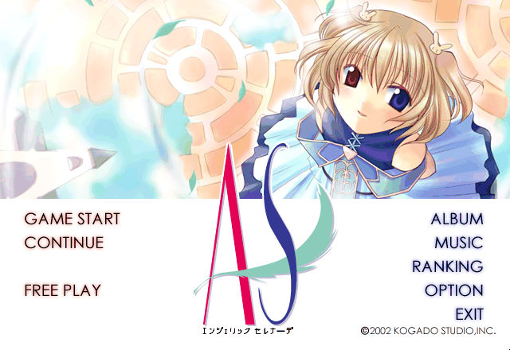
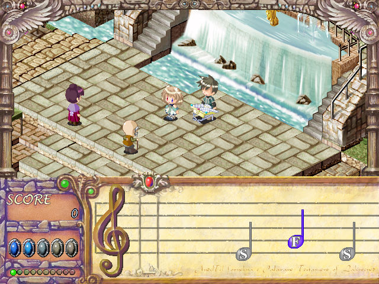

名稱：天使小夜曲 (Angelic Serenade，中文版) 簡介：工畫堂2002年出品的戀愛劇情冒險音樂演奏遊戲，由光譜中文化並代理發行 [待補]。

保護：光碟，破解碼： AS.EXE 59 85 C0 75 11 33 C0 8B 55 B8 -- -- -- EB -- -- -- -- -- -- 84 D2 75 41 85 F6 -- -- EB -- -- -- 備註：遊戲第二片光碟為純欣賞用音樂片，收錄遊戲中的音樂與歌曲。 備註：VirtualBox需搭配DxWnd（可全螢幕）。 檔案：as_update1.0.rar = 更新檔 操作：Ctrl = 快速略過對話 說明：遊戲由玩家每天的活動與事件來決定各人物的好感度，並在特定的日期進行演奏。